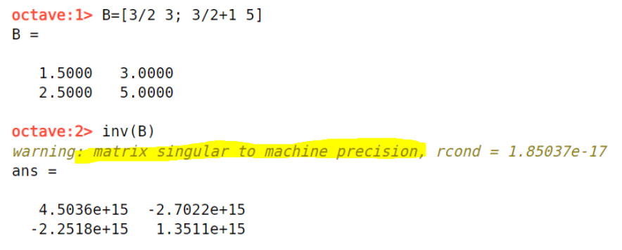

Käänteismatriisi
Contents
Käänteismatriisi#
Joillakin matriiseilla on olemassa niinsanottu käänteismatriisi. Matriisin \(A\) käänteismatriisia merkitään yläindeksillä \(A^{-1}\). Reaaliluvuilla sama merkintä tarkoittaa käänteislukua, mutta matriiseilla kyse ei kuitenkaan ole samanlaisesta laskutoimituksesta. Tässä kappaleessa opetellaan laskemaan pieniä käänteismatriiseja, ja myöhemmin niitä hyödynnetään yhtälöiden ratkaisussa.
Matriisille ja sen käänteismatriisille pätevät säännöt \(AA^{-1}=I\) ja \(A^{-1}A=I\). Ominaisuus pätee myös toiseen suuntaan: jos matriisin \(B\) kertolasku matriisin \(A\) kanssa kummalta tahansa puolelta tuottaa tulokseksi yksikkömatriisin, niin matriisi \(B\) on matriisin \(A\) käänteismatriisi ja voidaan merkitä \(B=A^{-1}\). Tämä matriisien ominaisuus on hyödyllinen yhtälöjen ja yhtälöryhmien ratkaisussa.
Esimerkki
Osoita, että matriisi \(B=\begin{bmatrix}2 & -5 \\ -1 & 3\end{bmatrix}\) on matriisin \(A=\begin{bmatrix}3 & 5 \\ 1 & 2\end{bmatrix}\) käänteismatriisi.
Ratkaisu
Lasketaan tulo \(AB\) ja todetaan, että tuloksena on yksikkömatriisi:
\(AB=\begin{bmatrix}3 & 5 \\ 1 & 2\end{bmatrix}\begin{bmatrix}2 & -5 \\ -1 & 3\end{bmatrix} = \begin{bmatrix}3\cdot 2 + 5\cdot (-1) & 3\cdot (-5)+5\cdot 3 \\ 1\cdot 2 + 2\cdot (-1) & 1\cdot (-5) + 2\cdot 3\end{bmatrix}=\begin{bmatrix} 1 & 0 \\ 0 & 1 \end{bmatrix}\).
Harjoitustehtävänä voit laskea myös tulon \(BA\) ja todeta, että siitäkin tulee yksikkömatriisi, kuten pitääkin.
Onko matriisilla käänteismatriisia?#
Kaikilla matriiseilla ei ole olemassa käänteismatriisia. Jotta käänteismatriisi voitaisiin laskea, matriisin \(A\) on oltava neliömatriisi. Käänteismatriisin olemassaololle on olemassa myös seuraava ehto:
Käänteismatriisi on olemassa jos ja vain jos \(\det{A} \neq 0\). Ilmaisu “jos ja vain jos” tarkoittaa sitä, että syy ja seuraus pätevät molempiin suuntiin:
jos käänteismatriisi on olemassa, niin \(\det{A} \neq 0\),
jos \(\det{A} \neq 0\), niin käänteismatriisi on olemassa.
“Jos ja vain jos”
Matematiikassa ilmaisu “jos ja vain jos” toistuu muuallakin. Eräs esimerkki tästä on tulon nollasääntö: jos yksikin kertolaskun tekijöistä on nolla, niin laskun tuloskin on nolla, ja toisin päin.
Kaikkiin laskusääntöihin syy ja seuraus eivät kuitenkaan päde molempiin suuntiin. Jos ilmauksen merkitystä on hankala sisäistää, voit ajatella ilmaisun molemmille puolille jotakin tutumpaa, esimerkiksi “menen nukkumaan, jos ja vain jos minua väsyttää”. Onkohan tämä totta, ja jos ei, niin millaisissa tilanteissa ei?
Jos neliömatriisilla on käänteismatriisi, niin matriisia sanotaan säännölliseksi. Jos neliömatriisilla ei ole käänteismatriisia, niin matriisia sanotaan singulaariseksi.
Esimerkiksi matriisin \(A=\begin{bmatrix}3 & 1 \\ 6 & 2 \end{bmatrix}\) determinantti on \(\det{A} = 3\cdot 2 - 1\cdot 6 = 0\), joten matriisilla \(A\) ei ole käänteismatriisia. Matriisi \(A\) on singulaarinen.
Esimerkki
Millä ehdolla matriisilla \(B=\begin{bmatrix}x & 3 \\ x+1 & 5\end{bmatrix}\) on olemassa käänteismatriisi?
Ratkaisu
Lasketaan matriisin \(B\) determinantti ja selvitetään, millä luvun \(x\) arvolla se ei ole nolla.
\(\det{B}=x\cdot 5 -3\cdot (x+1) = 5x-3x-3=2x-3\)
\(2x-3 \neq 0 \Leftrightarrow 2x \neq 3 \Leftrightarrow x \neq \frac{3}{2}\)
Luku \(x\) voi siis olla mikä tahansa paitsi \(\frac{3}{2}\). Jos \(x=\frac{3}{2}\), niin matriisi \(B\) on singulaarinen.
Käänteismatriisin laskeminen#
Matriiseille, joiden tyyppi on \(2 \times 2\) ja joiden determinantti on erisuuri kuin nolla, voidaan laskea käänteismatriisi suoraviivaisesti. Merkitään nämä ehdot täyttävän matriisin \(A\) alkioita seuraavasti:
\(A=\begin{bmatrix}a&b\\c&d \end{bmatrix}\)
Tällöin käänteismatriisi on \(A^{-1}=\frac{1}{\det{A}} \begin{bmatrix} d & -b \\ -c & a\end{bmatrix}\) eli \(A^{-1}=\frac{1}{ad-bd} \begin{bmatrix} d & -b \\ -c & a\end{bmatrix}\)
Käänteismatriisissa siis vasemman yläkulman ja oikean alakulman alkiot vaihdetaan keskenään, ja loppujen etumerkki vaihtuu. Lisäksi käänteismatriisin alkiot jaetaan matriisin determinantilla.
Perustelu
Lasketaan tulo \(AA^{-1}\) ja todetaan, että tulos on yksikkömatriisi:
\(AA^{-1}=\frac{1}{ad-bc} \begin{bmatrix}a&b\\c&d\end{bmatrix} \begin{bmatrix}d&-b\\-c&a\end{bmatrix}=\frac{1}{ad-bc} \begin{bmatrix}ad-bc&-ab+ab\\cd-cd&-bc+ad\end{bmatrix}=\begin{bmatrix}1&0\\0&1\end{bmatrix}\).
Myös kertolasku \(A^{-1}A\) tuottaa yksikkömatriisin.
Esimerkki
Määritä käänteismatriisi matriisille \(B=\begin{bmatrix}3&10\\1&5\end{bmatrix}\), jos sellainen on olemassa.
Ratkaisu
Matriisin \(B\) determinantti on \(3\cdot 5-10\cdot 1=5 \neq 0\), joten käänteismatriisi on olemassa.
Käänteismatriisi on \(B^{-1}=\frac{1}{3\cdot 5-10\cdot 1} \begin{bmatrix} 5&-10 \\ -1&3 \end{bmatrix} = \frac{1}{5}\cdot \begin{bmatrix} 5&-10 \\ -1& 3 \end{bmatrix} = \begin{bmatrix}1&-2\\-\frac{1}{5} & \frac{3}{5} \end{bmatrix}\).
Muille kuin \(2 \times 2\) –tyypin matriiseille käänteismatriisi on laskettava tietokoneella tai niinsanottujen vaakarivien alkeismuunnosten avulla. Menetelmä toki toimii myös \(2\times 2\) -tyypin matriiseille. Alkeismuunnoksia ovat
rivin kertominen jollakin nollasta poikkeavalla luvulla
kahden nollasta poikkeavalla luvulla kerrotun rivin yhteenlasku
matriisin rivien vaihtaminen keskenään
Matriisin \(A\) käänteismatriisin laskua varten rakennetaan uusi matriisi, jossa matriisi \(A\) ja yksikkömatriisi \(I\) ovat vierekkäin. Matriisin \(A\) paikalle pyritään alkeismuunnoksilla saamaan yksikkömatriisi, ja yksikkömatriisin paikalle muodostuu samalla matriisi \(A^{-1}\).
Octavella matriisin \(A\) käänteismatriisi saadaan komennolla inv(A) tai A^-1. Tietokoneet käyttävät käänteismatriisin muodostamiseen erilaista menetelmää kuin tässä.
Esimerkki
Laske matriisin \(A=\begin{bmatrix}3&5\\1&2\end{bmatrix}\) käänteismatriisi alkeismuunnosten avulla.
Ratkaisu
Muodostetaan matriisista \(A\) ja yksikkömatriisista uusi matriisi \(B\):
\(B=\begin{bmatrix} 3&5&1&0\\ 1&2&0&1 \end{bmatrix}\)
Pyritään ensin saamaan 2. rivin 1. alkion tilalle 0. Kerrotaan 2. rivi luvulla -3, jolloin 2. riviksi saadaan \(\begin{bmatrix}-3 & -6 & 0 &-3\end{bmatrix}\).
Laskemalla tämä yhteen matriisin \(B\) 1. rivin kanssa saadaan \(\begin{bmatrix}3-3 & 5-6 & 1+0 & 0-3\end{bmatrix}=\begin{bmatrix}0 &-1& 1 -3\end{bmatrix}\).
Korvataan matriisin \(B\) toinen rivi yhteenlaskun tuloksella: \(B=\begin{bmatrix}3&5&1&0\\0&-1&1&-3\end{bmatrix}\)
Seuraavaksi pyritään asettamaan 1. rivin 2. alkio nollaksi. Kerrotaan nyt 2. rivi luvulla 5, jolloin 2. riviksi saadaan \(\begin{bmatrix}0 & -5 & 5 & -15\end{bmatrix}\).
Lasketaan yhteen tämä sekä matriisin \(B\) 1. rivi, jolloin saadaan rivi \(\begin{bmatrix}3+0 & 5-5 & 1+5 & 0-15\end{bmatrix}=\begin{bmatrix}3 & 0 & 6 &-15\end{bmatrix}\).
Korvataan matriisin \(B\) 1. rivi tällä rivillä, jolloin saadaan \(B=\begin{bmatrix} 3&0&6&-15 \\ 0&-1&1&-3\end{bmatrix}\).
Matriisin \(B\) 1. rivi on nyt jaettava luvulla 3 ja 2. rivi kerrottava luvulla -1: \(B=\begin{bmatrix}1&0&2&-5\\0&1&-1&3\end{bmatrix}\).
Nyt matriisin \(B\) ensimmäinen ja toinen sarake muodostavat yksikkömatriisin, ja samalla kolmanteen ja neljänteen sarakkeeseen on muodostunut matriisin \(A\) käänteismatriisi: \(A^{-1}=\begin{bmatrix}2&-5\\-1&3\end{bmatrix}\).
Huomautus käänteismatriisin laskemisesta tietokoneella
Tietokoneen käsittelevät lukuja eri tavalla kuin ihmiset. Joskus tietokoneen mielestä esimerkiksi ihmisen mielestä ilmiselvä luku 4 saattaakin olla 3.99999… tai vaikka 4.000000…00001. Tietokoneen muistissa luvut ovat liukulukuina.
Tästä syystä joskus esimerkiksi Octave voi olla eri mieltä siitä, onko matriisilla käänteismatriisia vai ei. Tämän sivun aiemmassa esimerkiksi todettiin, että matriisilla
\(B=\begin{bmatrix}\frac{3}{2} & 3 \\ {3}{2}+1 & 5\end{bmatrix}\)
ei ole käänteismatriisia, koska sen determinantti on
\(\frac{3}{2}\cdot 5 - 3 \cdot (\frac{3}{2}+1) = \frac{15}{2}-\frac{9}{2}-\frac{6}{2}=0\).
Kuitenkin kun Octaveen syöttää kyseisen matriisin, tietokone laskee sillekin käänteismatriisin. Käänteismatriisin luvut ovat kuitenkin hyvin suuria (merkintä e+15 tarkoittaa kerroin \(10^{15}\)). Tällaisessa tapauksessa käänteismatriisia ei pidä käyttää missään laskutoimituksissa. Oleellista on huomata virheilmoitus: matriisi on singulaarinen.
